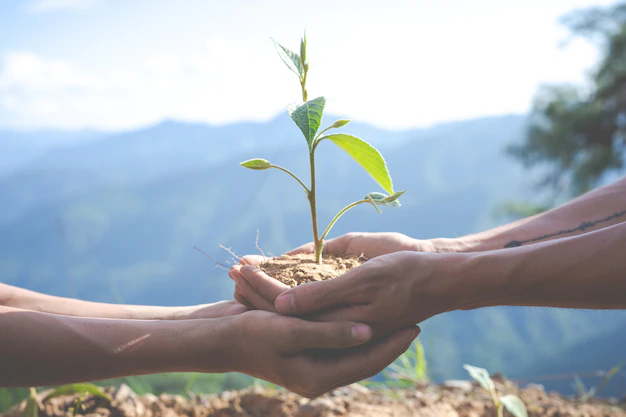
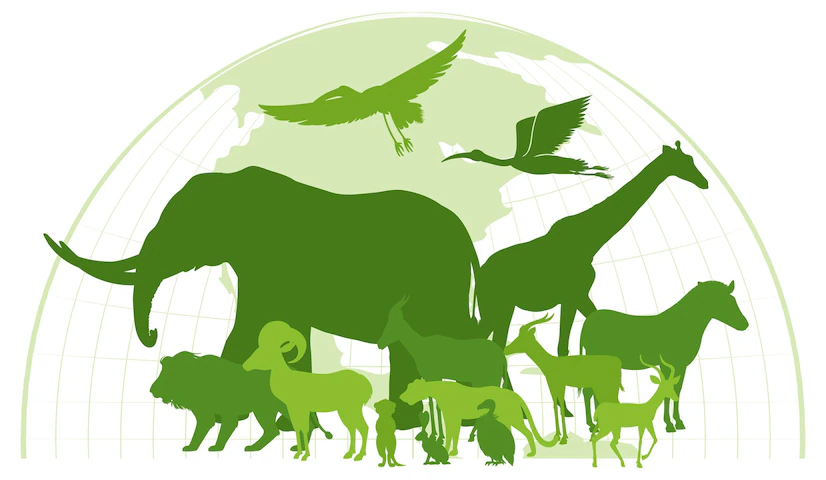

Metas
-
15.1 Até 2020, assegurar a conservação, recuperação e uso sustentável de ecossistemas terrestres e de água doce interiores e seus serviços, em especial florestas, zonas úmidas, montanhas e terras áridas, em conformidade com as obrigações decorrentes dos acordos internacionais
15.2 Até 2020, promover a implementação da gestão sustentável de todos os tipos de florestas, deter o desmatamento, restaurar florestas degradadas e aumentar substancialmente o florestamento e o reflorestamento globalmente
15.3 Até 2030, combater a desertificação, restaurar a terra e o solo degradado, incluindo terrenos afetados pela desertificação, secas e inundações, e lutar para alcançar um mundo neutro em termos de degradação do solo
15.4 Até 2030, assegurar a conservação dos ecossistemas de montanha, incluindo a sua biodiversidade, para melhorar a sua capacidade de proporcionar benefícios que são essenciais para o desenvolvimento sustentável
- 
15.5 Tomar medidas urgentes e significativas para reduzir a degradação de habitat naturais, deter a perda de biodiversidade e, até 2020, proteger e evitar a extinção de espécies ameaçadas
15.6 Garantir uma repartição justa e equitativa dos benefícios derivados da utilização dos recursos genéticos e promover o acesso adequado aos recursos genéticos
15.7 Tomar medidas urgentes para acabar com a caça ilegal e o tráfico de espécies da flora e fauna protegidas e abordar tanto a demanda quanto a oferta de produtos ilegais da vida selvagem
15.8Até 2020, implementar medidas para evitar a introdução e reduzir significativamente o impacto de espécies exóticas invasoras em ecossistemas terrestres e aquáticos, e controlar ou erradicar as espécies prioritárias
- 
15.9 Até 2020, integrar os valores dos ecossistemas e da biodiversidade ao planejamento nacional e local, nos processos de desenvolvimento, nas estratégias de redução da pobreza e nos sistemas de contas
15.a15.a Mobilizar e aumentar significativamente, a partir de todas as fontes, os recursos financeiros para a conservação e o uso sustentável da biodiversidade e dos ecossistemas
15.b15.b Mobilizar recursos significativos de todas as fontes e em todos os níveis para financiar o manejo florestal sustentável e proporcionar incentivos adequados aos países em desenvolvimento para promover o manejo florestal sustentável, inclusive para a conservação e o reflorestamento
15.c15.c Reforçar o apoio global para os esforços de combate à caça ilegal e ao tráfico de espécies protegidas, inclusive por meio do aumento da capacidade das comunidades locais para buscar oportunidades de subsistência sustentável